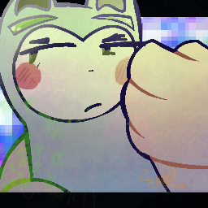

<!DOCTYPE html>
<html>
    <head>
        <meta charset="UTF-8">
        <!--CE stands for Cool's Encyclopedia-->
        <title>
            Keymaster - CE
        </title>
        <link rel="icon" type="image/png" href="./Data/ravenpixel.png">
        <style>
            aside {
                width: 50%;
               padding-left: 15;
               margin-left: 15;
               float: right; 
            }
        </style>
    </head>

    <body>

        <aside style="width: 95%; padding-left: 15px; margin-left: 15px; float: right;">

                <aside style="all: inherit; width: 50%; padding-left: 15px; margin-left: 15px; float: right;">
                    <br>

                    <!--Image comment-->
                    <small>
                        Keymaster as he appears in Cool's Discord profile picture. (Drawn by Smore)
                    </small><br><br>
                    <!--Name-->
                    Keymaster<br>
                    <!--Pronouns-->
                    He/Him<br>
                    <!--Index-->
                    <em>        </em>#01 <A href="./raven.html">Next --)</A><br>
                    <!--Defining trait-->
                    Defining Trait: Confidence<br>
                    <!--Notes-->
                    <b>
                        Notes:<br>
                    </b>
                    <small>
                        First OC that Cool ever made.<br>
                        Has a variety of powers.<br>
                        Is classified as a god.
                    </small>
                </aside>
            <!--Top of page: Title-->
            <h1>
                Keymaster
            </h1>
            <!--Top of page: Quote-->
            <h5>
                "He doesn't... Feel like himself anymore. Like something important within him has changed... And he can't tell what it is, or what did it.
                This all just feels like some big thing has happened to him that he just hasn't realized yet. Maybe that maze..? What it did to him over all
                that time..? He couldn't tell. He couldn't tell anything out of anything anymore. Maybe that whole Recon call thing was a dream. Actually,
                he was pretty certain it was a dream. He probably just fell asleep in the cave, had that dream, and that circuit guy woke him up. I mean,
                that mouse and the Orb are both gone, it would make sense... But he thought he got over Recon's death. Or maybe he didn't... He never could
                figure out whether that Recon he had talked to during those hallucinations was real or not... And that call he had with Recon was in a
                dream... He hasn't talked to Recon... At all. Despite everything he thought he knew... None of it was real. Maybe nothing at ALL was
                real... He could've passed out in that maze for all he knew. He could still be in there, widdling away at that exit... Or he could still
                be asleep in the cave. He couldn't tell anymore. He can't make anything out of ANYTHING... Is this the same feeling Gwen is having..? Alone
                in that maze..? Needing someone, and yet nobody ever comes..? Is this what insanity feels like..? Who knows... Not him, that's for sure..."
            </h5>
            <h6>
                - Cool describing D.O.C.T.O.R. Keymaster, while Keymaster is dissociating
            </h6>
            <!--Top of page: Homepage Hyperlink-->
            <h3>
                <a href="./index.html">Back to home</a>
            </h3>
            <!--Top of page: Infoboxes (Page Warnings)-->

            <!--Missing images-->
            <table>
                <colgroup>
                    <col style="background-color: crimson;">
                </colgroup>
                <tr>
                    <th>
                        <b>
                            This page is missing images.
                        </b>
                        <br>
                        <small>
                            Missing images: Yet to be detailed.
                        </small>
                    </th>
                </tr>
            </table>
            <!--Missing Content-->
            <table>
                <colgroup>
                    <col style="background-color: crimson;">
                </colgroup>
                <tr>
                    <th>
                        <b>
                            This page is missing content.
                        </b>
                        <br>
                        <small>
                            Missing content: Table of Contents, Lore, Camps, Camp lore, Gallery, etc.
                        </small>
                    </th>
                </tr>
            </table>
            <!--Middle of page: Official Description-->
            <h2>
                Official Description:<br>
            </h2>

            <p>
                Keymaster is a god that lives in The Void. His job, (or in His words, purpose) is to go around to different universes, and remove any
                anomalies he may find there. Anomalies, you know, things that aren't supposed to <em>be there.</em> He really enjoys what he does, or
                at least that's what he <em>says</em>. <wbr>
                Keymaster has a vast assortment of <a href="./abilities.html">Abilities</a> at his disposal. The one he likes to use the most is his
                <a href="./abilities.html">Ability</a> to conjure things. To focus the energy within him into a solid object of any material he wishes.
                His most common use for this is creating arms with it.
            </p>
            <!--KEEP THIS AT VERY BOTTOM!!-->
            <br>
            <br>
            <small>
                <small style="color: gray;">
                    <small>
                        Update convention: major.minor.patch(stage of dev)<br>
                    </small>
                    Site Version: <div id="text-container">Loading...</div>
                </small>
            </small>
            <script src="script.js"></script>
        </aside>
    </body>
</html>